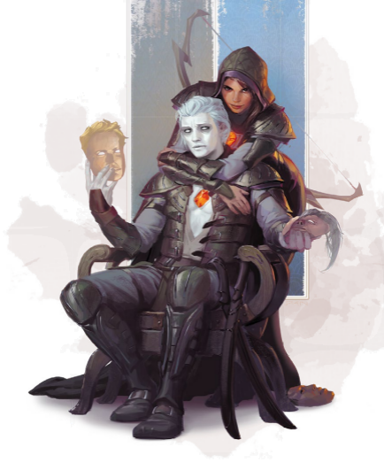

“只要你让他们遵循我的道，让他们在世界上流浪，我就会保护他们。他们将无人知晓，敌人无从寻得他们的影踪。他们不会建立起王国，但道路即是他们的国度。他们也许会被疏远，但他们永远也不会灭亡。”
这据说便是旅者之诺言，这一承诺造就了第一个具有变形馈赠的幻身灵。许多幻身灵至今仍然遵循着这样的生活方式——他们以不为世人所知的部族形式在世界上流浪。但也有越来越多的幻身灵选择公开生活。作为一位幻身灵冒险者，你可能会使用你的天赋来愚弄敌人——但你是否会将自己真实的面容展现在你的同伴面前？

幻身灵起源Changeling Origins
幻身灵分布在科瓦雷和索隆那全境。他们能够和其他类人生物种类结合，而产生的子嗣要么是幻身灵，要么是另一方的种族——“半幻身灵”并不存在。因此就像你能够作为一位和艾伦诺无关的布鲁兰精灵，你也能成为一个与任何其他幻身灵文化或群落无关的幻身灵。在阿卡尼克斯和莫格雷夫大学都有幻身灵学生，而国王密使和安黛尔的王室之眼也同样有着幻身灵特工，有许多幻身灵忠诚于他们称之为故土的国家。因此作为一个幻身灵角色，你不需要深厚的文化情结，但如果你希望探索幻身灵的起源，这里有一些有趣的主意。
旅行者Travelers
游牧的幻身灵通常被称为“旅行者”，这个名字既指他们流浪的生活方式，也指黑暗六神之中的旅者——而在传说中，正是祂给了幻身灵改变形态的能力，而祂那混乱的天性至今仍然残留在许多旅行者的生命之中。
最古老的旅行者是婕斯的孩子们（the Children of Jes）。在被旅者赐福之后，这些孩子们沿着逐渐发展变化的迁徙路线，让族群之外的人难以预测。许多幻身灵以小队的形式旅行——作为一队艺人，一支商队，一辆异国旅行者的篷车。而其他的人则偏爱独自旅行。除此之外，他们信奉者改变的重要性，在旅途期间使用着许多不同的人格面具。修补匠，诗人，信使和祭司是常用的角色，而幻身灵十分擅长这些人物的活计。旅者祭司可以在早上向天命诸神布道，晚上则能带领诵起银焰之歌。当他们藏起幻身灵的本质时，婕斯的孩子们对于周围的人来说常常泯然众人；他们使用纹身或疤痕组成的秘密语言，以及共用的人格面具来辨认彼此，
在五国之中，很少有人能真正理解幻身灵旅行者们的文化和价值观。有些会对隐藏文化的概念感到不安，因为一位陌生人可能不是他们看上去那位人类或者大地精。另一些人则认为，由于幻身灵不可思议的能力，他们能随意改变自己的面孔，因此他们会利用这一能力来达成恶意的目的，沿途欺骗诚实的乡民。事实上，幻身灵的传统早于伽利法王国的法律，而其中一些幻身灵认为只要一同等价值的礼物作为交换，“获得”他人的财物便并无不公平可言。一些旅行者声称，旅者之祝福是他们以“单皮生物”—这是他们对缺乏变形能力的生物的称呼，作为猎物的权利。然而，旅行者并不生来比其他任何人就要不诚实，无论是龙纹家族继承者还是护门者德鲁伊。而由于他们的变形能力和流浪偏好，即使那些尊重当地风俗的幻身灵也承受了过多的怀疑。
作为玩家角色，第六章中的幻身灵旅行者背景能够让你成为这一遍布四海的幻身灵秘密网络的一部分。作为DM，你可以让婕斯的孩子们作为一个小偷或骗徒的来源。但他们也可以更加神秘和戏剧性——作为意想不到的盟友，他们几乎可以出现在任何地方。
安居的幻身灵Stables Changelings
在伽利法王国的律法之下，许多幻身灵选择走出阴影，在光天化日之下公开生活，而如今在五国的大部分主要城市之中都能找到他们的身影。固定社区——如萨恩的龙眼区和沃奥特的黑叶区中的幻身灵很少藏起他们的自然面貌。这让他们利用他们的独特天赋公开出售服务和追求事业，如边栏“幻身灵事业”中所述。然而，许多人仍然使用着共享的人格面具，外人可能会因为幻身灵与人格面具不固定的关系而感到迷惑。定居下来的幻身灵不会受到像旅行者那样同等程度的偏见，但仍然有许多单皮族裔仍然认为幻身灵不可信任。
在五国城市中的幻身灵居民之外，有两种特别的幻身灵文化。拉扎尔联邦的灰潮邦国（the Gray Tide）是一个有着坚实贸易传统的幻身灵国度。也有人说灰潮集结了一大帮幻身灵海盗，使用他们的变形天赋来嫁祸给其他拉扎尔公子。在卓姆，幻身灵在失落之城中具有一处要塞。然而没有外来者知道失落之城的地点，据说那座城市自身就是活着的生物，能够自由行走和改变形态。除此之外，失落之城的幻身灵是索拉·科伦的女儿们强大的盟友，也有幻身灵为达斯克（Daask）效力。
作为玩家角色，安居的幻身灵背景上给了你一个可以称为家的地方，也能让你在自己的真实面目下生活。作为DM，一个幻身灵社区能够作为有趣的冒险背景，或者一个容易找到幻身灵服务的方便地方。
过客Passers
虽然幻身灵在大城市中有着自己的形象，但在许多村落和城镇里，他们仍然受到恐惧和怀疑。你可能出生于这样一个聚居地中，可能根本不认识任何其他的幻身灵。作为一个过客，你创造出了一个你认为是自己真实面目的人格面具。你可以作为一个人类战士或精灵牧师度过一生，而动用变形能力只是你最后的手段。
如果你作为一名过客长大，你在此之前过着怎样的生活？你是否希望了解更多其他的幻身灵文化，或者你拒绝与其他的幻身灵有着任何联系？你了解你的幻身灵本质，还是你认为你的过客外表才是你的真实自我？你是否以其他东西来伪装你的幻身灵能力——声称你不含魔法的帽子是一顶易容帽hat of disguise，或者假装你在变形时施展了易容术disguise self？
对于一个孤儿、化外之民或者其他经历过压迫，现在才开始逐渐了解自己的幻身灵本性的人来说，过客是一个有趣的选择。作为NPC，过客能够加入混乱的元素——如果一位被杀死的反派被发现是一位幻身灵，他们是使用了替身而自己逃之夭夭，还是这位反派自始至终便是一位过客？
其他Others
幻身灵与其他种族一样多样，能呈现出许多你可以发掘的文化和生活方式。求真者（Reality Seeker）是定居的幻身灵，他们更喜欢自然的形态，避免欺骗他人，而非寻找无止境的真理。为了更充分地理解其他人的经历，扮演者（Becomers）积极的寻求多种生活方式。千面之阁（Cabinet of Faces）是一个崇拜旅者的秘密团体，其成员热衷于挑战传统和制造混乱。你是否和这些运动有所联系？
人格面具Personas
对于幻身灵来说，身份就像是一套衣服。在幻身灵社区中，一张人格面具可能是一枚办公室徽章或一套制服那样的作用。当地的祭司是荷斯神父。治安官是大铎尔。而医生是莱拉。无论是谁接手这份工作的时候都会使用这张面具。可能存在三位不同的祭司，但进行他的工作的那位总是使用荷斯神父的身份。在某种程度上，这是视觉上的影响，但他们也接纳了这张人格面具——并非只是让自己看起来像是荷斯神父，而是成为荷斯神父，给人以自然而然的感觉。
对于旅行的部族来说这尤其重要。在可能会遭遇敌意的聚居地中，旅行者们使用建立完善的人格面具作为突破口。一位值得信赖的商人，一位受人爱戴的说书人，或者一个可靠的雇佣兵，任何一个旅行者都可以使用这些完善的人格面具来确保自己受到欢迎。当然，当你使用一个完善的人格面具时，也当由你来保护其声誉。如果暴露了自己幻身灵的身份或者破坏了面具的名誉，那么你就破坏了一件宝贵的工具。
许多幻身灵会发展出自己独有的人格面具。如果你是一位擅长小提琴的战士，你可能会在战斗中使用狰狞的半兽人形态，而当你拉琴时，你可能会使用优雅的精灵形态。你不需要使用一张人格面具——小提琴手也能以精灵的模样战斗——但面具能够提供一种让幻身灵专注于一项特别技艺的方法。第六章中的专注面具专长反映了这一特点。
|
边栏：幻身灵事业Changeling Careers 人们常常认为变形的天赋是幻身灵用来欺骗的工具。但在幻身灵公开生活的地方，包括卓姆和其他五国之中的大城市，变形也有许多实用的用法。幻身灵们长期支配着有偿陪伴的行业，利用他们的天赋来实现人们的幻想。虽然这可能是和性有关的工作，但也有着许多其他幻身灵专门为客户提供和远在他方的爱人共进晚餐或倾诉衷肠的机会，或是和幻身灵替身练习困难的对话的机会。许多艺术家用幻身灵作为多才多艺的摩特。幻身灵也常常做美容师的工作；除了拥有对外表变化本质的深刻理解，他们还能将自己的形态作为调色板，以完善客户的目标外观。 扮演者也是一种可行的职业。你需要同时出现在不同的两地？你想让当地的名人出现在孩子的生日聚会上吗？雇一个幻身灵扮演者。邓奈斯家族的防卫公会最近也开始了训练并为优秀的幻身灵保镖授权执照，他们可以在必要的时候扮演替身或者充当看似无害的旁观者。 许多幻身灵追求娱乐事业。毕竟，如果穿着合适的百变外套shiftwear，一位幻身灵可以扮演五个不同角色！然而，索兰尼家族和费奥兰家族却被指控剥夺了幻身灵的机会，在有执照的费奥兰公司中，幻身灵通常被贬为有着龙纹的超级巨星的替角或特技替身。 |
幻身灵人设Changeling Concept
你能够创造出任何职业和背景的角色——而他正好是一位幻身灵，你也能创造出一个概念完整联系到作为幻身灵身份的角色。第六章中介绍了幻身灵旅行者背景，三项种族专长，以及一个将变形和武术训练融合的超体宗武僧流派。而你也可以有一个同样有趣的背景故事，对应任何背景和枝叶的角色，而不是只是调整“绒毛”——流于表面的背景故事和细节——来适应一个角色。虽然以下的注意并不会对任何职业规则造成改变，但是与你的DM对任何新奇概念进行商讨，确保它能够适用总是一个好主意。
异种术士The Aberrant Sorcerer
一位异种龙纹术士具有危险的力量，如果你找到一个使用天生能力来改变龙纹的——并同时改变它给予你力量的办法呢？狂野魔法术法起源能够反映这个你无法完全控制自己力量的点子，也表现了你能做到的事情和你操纵力量的办法。获得新的法术可能会反映为你将龙纹重塑为了新的形状。
这样的能力前所未见——龙纹并不受试图调整和重绘它们的效果影响。如果你能转变自己异种龙纹的形态，你一朝一日是否也能变化出真龙纹的力量？这一赠礼意味着你在巨龙预言中有着独特的地位，或是这一力量是一项异变魔或一群叛逆之龙实验的一部分。如果你使用隐士背景，这能作为你研究发现的成就。无论真相如何，你一定会引起龙纹家族和塔卡南家族的兴趣。
幻身灵替换儿The Changeling Changeling
在许多地方都可能存在着瑟兰尼斯和艾伯伦之间的通道，而无数故事也讲述了呗妖精偷走的情节。在孩提时代，也许你不小心迷路穿过了一个传送门，然后出现在妖精花园之中。在瑟兰尼斯度过数十年以后，你作为一位强大的至高妖精的特工回到了这个世界…作为一个幻身灵替换儿。
这对以至高妖精为宗主的邪术师是一条合理的道路，也同样适用于一位诗人（比如选择迷惑学院的情况下）。你的力量同时反映出来自宗主的赠礼和在瑟兰尼斯期间学到的把戏。你是否带着一个亟需完成的任务？或者你只是在重新适应这个你离开过的世界，等待你的宗主下达任务？
作为一个幻身灵替换儿，你是一个曾经居住于童话般世界中的外来者，而你仍在学习这个世界如何运作。化外之民背景是一个选项，反应了你在瑟兰尼斯的无痕森林中的童年时光。隐士背景是另一个合情合理的选择；你的发型可能是一项宗主分享的秘密。而另一个办法是说你已经回到物质位面一段时间——也许你已经作为一位演奏妖精荒野的雅乐的演出者而享有盛誉，或已经成为了一位使用精类魔法的平民英雄。
骗徒The Fraud
你具有贵族背景，你是一个贵族家族的骄傲后裔…但你实际并非如此。你是一个年轻贵族雇佣来提到他们位置的幻身灵替身，而他们再也没有回来取回本属于自己的地位。这生活不错，你也严格履行这自己的职责，而你精于此道——甚至远比你替代的那个人擅长扮演这一角色，但你并非你表面的样子。这对你的冒险生涯有何影响？你在成为一个披着贵族外表的骗子之前，你认识自己的冒险同伴吗？你有一个在冒险时使用的独立人格面具，还是以这位贵族的名义进行冒险？
虽然贵族背景对这个故事来说是个合情合理的建议，也有其他许多背景可供选择。你曾经是一位死于神秘事故的著名艺人的替身，然而如今是你享有大众的追捧，但你的名气建立于他人的容貌和才气之上。或者你是一位被迫完成间谍任务的联系人。任何职业都能适用于这个故事——但在冒充他人身份的同时，好处和责任也接踵而来。
变相怪杰The Menagerie
作为一位幻身灵，你能适用任何类人生物的形象。但如果你发现自己能做到的远远不止如此，即使是动物的形态也不在话下呢？作为月亮结社的德鲁伊，你可以声称自己的法术和变形能力并非来自于和自然的联系，而是你天生能力的进化。像是大步奔行longstrider, 黑暗视觉darkvision, 和树肤术barkskin可以解释为进化后的变形能力，而魅惑人类charm person和人类定身术hold person则反映了精神上的天赋。
如果你希望使用这个具有德鲁伊能力而和德鲁伊传统无关的主意，你可以和DM讨论替换德鲁伊语特性。如果你使用了罪犯背景，DM可以将其换成盗贼黑话；其他选项包括幻身灵旅行者背景中所述的皮肤暗号（skin cant）。如果你没有选择这项，你也可以将其替换成另一项不常见的语言。
|
边栏：千变万化Casual Shapechanging 作为一个幻身灵，你明白变形的能力对你来说是一种自然的反映。它并非必须要用在模仿或者欺诈上。你可以随心所欲地改变你的头发颜色或发型，对应心情改变眼睛的颜色，甚至在皮肤上创造出艺术图案。你可以使用任何面孔来表达心情。你在做粗鲁手势的时候也可以选择你想要的的手来比划出它们。变身给了你许多有创意的选项，不要害怕去使用它们！ |
泛神论者The Pantheist
流浪的祭司对于幻身灵旅行者来说是一个轻松扮演的角色；选择一种你知道会在城镇中受到欢迎的信仰，为你的晚餐布道，然后第二天继续启程出发。如果你选择了这样的道路，你可能会有一件百变外套shiftwear，能够化作天命诸神、银焰和沃尔之血祭司的法衣样式。但当你这样招摇撞骗时，奇怪的事情发生了。你找到了信仰。你相信天命诸神在守护着你；你相信银焰增强了为光明而战的勇士们的力量；当你使用精灵的形象时，你甚至能感到对不朽王庭的忠诚。当你使用一种信仰的外衣时，你也会感觉到与它的联系。你有着对每一种信仰的愿景，而神术魔法也在你身上流淌。就你而言，所有的信仰都是真实的；你只是为了工作而选择换到适当的正确信仰而已。
处理这一设定最简单的方法是选择一个广泛的领域——比如生命——并让你在变化时通常采用同一外观，作为角色扮演的基础。当你希望突入战场时，将你的外形变为杜·顿恩的信徒。要对抗兽化人？变成银焰的信徒。和死人说话？是该向沃尔之血祈求力量的时候了。在采用这些信仰的时候，你都对它们深信不疑，你接受的所有信仰都有效，而你寻求帮助不同信仰的人们互相理解。如果你的DM喜欢这个想法，另一只可能性是你可以收到你目前采用的信仰的神圣愿景。使用昂纳塔的伪装并不会在规则上给你锻造领域的好处，但你可能会得到天命诸神的愿景。需要再次重申的是，这纯粹是一个故事上的点子，你的神圣幻觉可能只是根深蒂固的错觉！